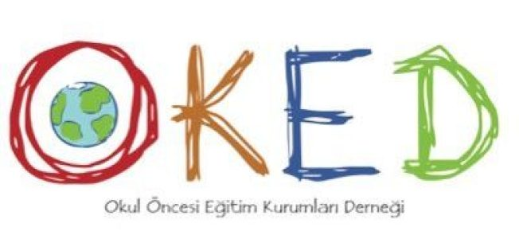

Örgün eğitim dışına çıkarma cezasını gerektiren davranışlar;

Okul öncesi eğitim kurumları derneği, Türkiye’deki okul öncesi eğitim kurumları arasında bir bağlantı noktası görevi gören, okul öncesi eğitim alanında çalışan kurum ve kişilerin bir araya gelerek ortak amaçlar doğrultusunda faaliyetlerde bulunduğu bir sivil toplum kuruluşudur. Okul öncesi eğitim kurumları derneği, ülkemizde okul öncesi eğitimin yaygınlaşmasını, kalitesinin artırılmasını, eğitimcilerin mesleki gelişimlerini desteklemeyi ve okul öncesi eğitim alanındaki politika, strateji ve yasal düzenlemelerin geliştirilmesine katkı sağlamayı hedeflemektedir. Dernek, üyeleri arasında iletişim ve işbirliği ağları kurarak, okul öncesi eğitimde kalite standartlarının yükseltilmesine yönelik çalışmalar yapmaktadır. Ayrıca, okul öncesi eğitim alanında araştırmalar yaparak, eğitim süreçlerinde uygulanabilecek yenilikçi yaklaşımları üyeleriyle paylaşmakta ve sektöre katkı sağlamaktadır. Okul öncesi eğitim kurumları derneği, üyelerine mesleki gelişim ve sertifikasyon programları, eğitim, seminer, konferans ve diğer etkinlikler düzenleyerek, üyelerinin daha nitelikli ve kaliteli eğitim sunmalarına destek olmaktadır. Özetle, okul öncesi eğitim kurumları derneği, okul öncesi eğitim alanındaki kurum ve kişilerin işbirliği içinde çalışarak, okul öncesi eğitimin yaygınlaşmasını, kalitesinin artırılmasını, mesleki gelişimlerinin desteklenmesini ve sektördeki yenilikçi yaklaşımların paylaşılmasını hedeflemektedir.